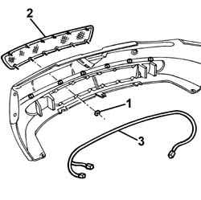
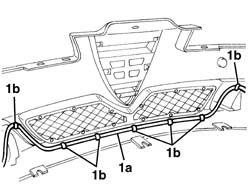

7205E10 Stripping FRONT BUMPER
- Path
- Procedures > 72 PANELS AND FRAME > 7205 STRIPPING FOR REPLACEMENT OPERATIONS > 7205E exterior parts > 7205E10 Stripping FRONT BUMPER
- Kind
- repair procedure (removal / refitting; the operation number is the code)
- Applies to
- all engines; all production periods
- Interactive page
- https://sloeber94.github.io/elrnDB-a156/en/#/3239015
Applies to: all engines; production: fino a 03/98, da 04/98 a 02/99, da 03/99 a 01/00, da 02/00 a 01/01, da 02/01 a 02/02, da 03/02 a 09/03
 Dismantling
Dismantling
 Reassembling
Reassembling7055A43 central front grille - r r .
7055A41 RIGHT FRONT GRILLE - R.R. .
5540D10 l/h or r/h fog lamp (one) - r+r .
5050D10 headlamp washer jet/s - r+r with bumpers removed .
1. Release the air intake grille retaining clips.
2. Remove the air intake grille.
3. Release the fog lamp wiring from the retainers.

Applies to: all engines; production: fino a 03/98, da 04/98 a 02/99, da 03/99 a 01/00, da 02/00 a 01/01, da 02/01 a 02/02, da 03/02 a 09/03
Reassembling
DismantlingCheck that the parts to be refitted are undamaged.
Position the wiring for the fog lights and engage it on the retainers.
Position the air intake grille and engage the retaining springs.
5050D10 headlamp washer jet/s - r+r with bumpers removed .
5540D10 l/h or r/h fog lamp (one) - r+r .
Applies to: all engines; all production periods
Dismantling
Reassembling5540D10 l/h or r/h fog lamp (one) - r+r (left and right)
7055B08 (One) GRILLE on front bumper - R.R.
1. Remove the fog lights wiring (1a) releasing it from the retainers (1b).

Applies to: all engines; all production periods
Reassembling
DismantlingCheck that the parts are not damaged.
Position the wiring and attach the retainers.
7055B08 (One) GRILLE on front bumper - R.R.
5540D10 l/h or r/h fog lamp (one) - r+r (left and right)
Topics linked from this page (6)
- 5050D10 headlamp washer jet/s - r+r with bumpers removed
- 5540D10 l/h or r/h fog lamp (one) - r+r
- 7055A40 radiator shield - r r
- 7055A41 RIGHT FRONT GRILLE - R.R.
- 7055A43 central front grille - r r
- 7055B08 (One) GRILLE on front bumper - R.R.